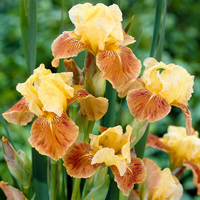
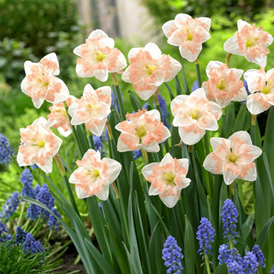

Тюльпан (лат. Tulipa) — рід багаторічних трав'янистих цибулинних рослин родини лілійних, який нараховує десятки видів та тисячі різноманітних сортів. Ця квітка є одним із найяскравіших символів весняного пробудження природи, краси та витонченості. Батьківщиною диких тюльпанів дослідники вважають посушливі та гірські райони Центральної Азії, зокрема території сучасних Ірану, Афганістану, Казахстану та Тянь-Шаню, де рослина адаптувалася до суворих кліматичних умов з холодною зимою та спекотним, посушливим літом. Етимологія назви квітки походить від перського слова «tolyban» або «toliban», що в перекладі означає «тюрбан», оскільки бутон тюльпана своєю формою дійсно нагадує цей традиційний східний головний убір. Історія культивації тюльпанів бере свій початок у стародавній Персії, де вони оспівувалися поетами як символ ідеального кохання, а згодом набули величезної популярності в Османській імперії, ставши улюбленою квіткою султанів, елементом розкішних орнаментів на кераміці, килимах і тканинах.

Справжній переворот у поширенні цих рослин відбувся у XVI столітті, коли цибулини тюльпанів були завезені до Західної Європи, зокрема до Нідерландів. Це спричинило безпрецедентне економічне явище, відоме в історії як «тюльпаноманія» — період, коли попит на рідкісні та екзотичні сорти з химерним забарвленням пелюсток досяг таких масштабів, що за одну цибулину найпрестижнішого сорту можна було придбати карету з кіньми, величезну ділянку землі або навіть цілий будинок у центрі Амстердама. Сучасна селекція пішла далеко вперед, і на сьогодні класифікація тюльпанів охоплює 15 класів, які поділяються на чотири великі групи залежно від термінів цвітіння та походження. Серед них зустрічаються прості та махрові, граціозні лілієцвітні, екстравагантні папугові з їхніми порізаними та хвилястими краями, бахромчасті сорти, що нагадують іній на пелюстках, а також унікальні зеленоцвітні гібриди, які зберігають часткову зелену пігментацію протягом усього періоду цвітіння.
Агротехніка вирощування тюльпанів вимагає дотримання певних правил, зокрема правильного вибору місця посадки, підготовки ґрунту та забезпечення відповідного температурного режиму. Найкраще ці весняні красені ростуть і розвиваються на добре освітлених, відкритих ділянках з легким, поживним та добре дренованим ґрунтом, який надійно захищений від холодних і різких вітрів. Цікавою фізіологічною особливістю тюльпанів є їхня здатність продовжувати активний ріст навіть після того, як стебло було зрізане; перебуваючи у вазі з водою, квітка може витягнутися ще на кілька сантиметрів і змінити напрямок росту, повертаючись до джерела світла. Щоб зберегти сортові властивості та запобігти здрібнінню бутонів, досвідчені садівники рекомендують щорічно викопувати цибулини після того, як листя повністю пожовкне, просушувати їх у затіненому місці з хорошою вентиляцією та зберігати при певній температурі до осінньої висадки, яка традиційно проводиться у вересні або жовтні, коли ґрунт достатньо охолоне для формування потужної кореневої системи перед настанням зимових морозів.
початок